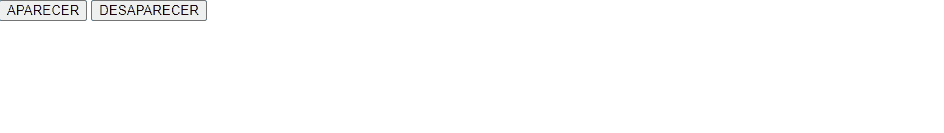
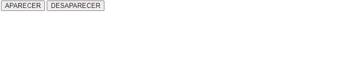

JQuery implementa efectos de transición de visibilidad que pueden emplearse para personalizar el modo en que los elementos de la página se muestran y ocultan mediante las funciones $().hide() y $().show(). No obstante, JQueryUI incluye versiones extendidas de estas funciones que incluyen aún más efectos.
Ambas funciones pueden reciben el mismo conjunto de parámetros:
$().show( <efecto>, <opciones>, <duracion_transicion>, <función_retrollamada> ) $().hide( <efecto>, <opciones>, <duración_transicion>, <función_retrollamada> )
El parámetro efecto se corresponde con una cadena que determina el efecto a aplicar. Los posibles valores son los siguientes:
El parámetro <opciones> recibe un objeto de configuración para el efecto. Este parámetro es opcional pero algunos efectos lo requieren para su configuración como “size” o “transfer”.
El parámetro <duracion> indica la duración del efecto expresado en milisegundos.
El parámetro <retrollamada> recibe como argumento una función para ejecutarse al completarse la animación del efecto.
(*) El efecto visual de cada uno de los efectos y sus parámetros requeridos de configuración pueden probarse en la web oficial de JQueryUI.
Ejemplo: El siguiente código muestra una
capa con contenido y dos botones “APARECER” y
“DESAPARECER” que la muestran y ocultan empleando las
funciones $().show() y
$().hide() y el efecto
“explode” con una duración de 1 segundo tras
lo cual se muestra un mensaje “TERMINADO”.

<!DOCTYPE html> <html> <head> <meta charset="utf-8" /> <title></title> <!-- Libreria JQuery comprimida --> <script src="https://code.jquery.com/jquery-3.6.0.min.js"></script> <!-- Tema 'base' para JQueryUI --> <link href="https://code.jquery.com/ui/1.13.1/themes/smoothness/jquery-ui.css" rel="stylesheet" /> <!-- Libreria JQueryUI comprimida --> <script src="https://code.jquery.com/ui/1.13.1/jquery-ui.min.js"></script> <script> // Función a ejecutarse al terminar el efecto show() y hide() function terminado() { alert("TERMINADO"); } $(function () { // Pulsacion de boton de mostrado ( show ). $("#btnAparece").on("click", function () { // Transicion de aparicion con efecto EXPLORE 1 segundo --> llamada a funcion terminado() $("#contenido").show("explode", {}, 1000, terminado); }); // Pulsacion de boton de ocultado ( hide ). $("#btnDesaparece").on("click", function () { // Transicion de desaparicion con efecto EXPLORE 1 segundo --> llamada a funcion terminado() $("#contenido").hide("explode", {}, 1000, terminado); }); }); </script> </head> <body> <div> <!-- CAPA con el contenido a ocultar y mostrar--> <div id="contenido" class="ui-widget-content ui-corner-all"> <h3 class="ui-widget-header ui-corner-all">Effect</h3> <p> Etiam libero neque, luctus a, eleifend nec, semper at, lorem. Sed pede. Nulla lorem metus, adipiscing ut, luctus sed, hendrerit vitae, mi. </p> </div> </div> <button id="btnAparece">APARECER</button> <button id="btnDesaparece">DESAPARECER</button> </body> </html> |
Para comprobar el resto de efectos sólo es necesario
modificar el parámetro "explode" de las funciones $().show() y $().hide().
En el caso del efecto "scale" es necesario indicar un objeto de configuración con el atributo "percent" indicando la escala inicial/final de la animación.
Modificando el código de la función de inicio del ejemplo anterior, obtenemos un efecto de transición modificando la escala de la capa al 50%:
$(function () { // Pulsacion de boton de mostrado ( show ). $("#btnAparece").on("click", function () { // Transicion de aparicion con efecto EXPLORE 1 segundo --> llamada a funcion terminado() $("#contenido").show("scale", { percent: 50 }, 1000, terminado); }); // Pulsacion de boton de ocultado ( hide ). $("#btnDesaparece").on("click", function () { // Transicion de desaparicion con efecto EXPLORE 1 segundo --> llamada a funcion terminado() $("#contenido").hide("scale", { percent: 50 }, 1000, terminado); }); });
La transición se muestra entonces de este modo:

$(function () { // Pulsacion de boton de mostrado ( show ). $("#btnAparece").on("click", function () { // Transicion de aparicion con efecto EXPLORE 1 segundo --> llamada a funcion terminado() $("#contenido").show("size", { to: { width: 10, height: 10 } }, 1000, terminado); }); // Pulsacion de boton de ocultado ( hide ). $("#btnDesaparece").on("click", function () { // Transicion de desaparicion con efecto EXPLORE 1 segundo --> llamada a funcion terminado() $("#contenido").hide("size", { to: { width: 10, height: 10 } }, 1000, terminado); }); });La transición se muestra entonces del siguiente modo:
La función $().effect()
JQueryUI incluye la función $().effect() que realiza ciertos efectos que permiten destacar un elemento modificando su tamaño o posición. Esta función se invoca a partir de una selección con JQuery sobre el elemento al que se quiere aplicar el efecto, y acepta los mismos parámetros que las funciones $().show() y $().hide(), pero ejecuta la aparición/desaparición final del elemento, sólo la animación.
La función $().effect() emplea la misma sintaxis que las funciones $().show() y $().hide().
Ejemplo: La siguiente página muestra una capa con contenido que se sacude con loe efectos “bounce” y “shake” durante un segundo al pulsar los botones “BOUNCE” y “SHAKE” respectivamente. Tras completarse el efecto se muestra en ambos casos un mensaje “TERMINADO":
<!DOCTYPE html> <html> <head> <meta charset="utf-8" /> <title></title> <!-- Libreria JQuery comprimida --> <script src="https://code.jquery.com/jquery-3.6.0.min.js"></script> <!-- Tema 'base' para JQueryUI --> <link href="https://code.jquery.com/ui/1.13.1/themes/smoothness/jquery-ui.css" rel="stylesheet" /> <!-- Libreria JQueryUI comprimida --> <script src="https://code.jquery.com/ui/1.13.1/jquery-ui.min.js"></script> <script> // Función que se ejecuta al terminar el efecto. function terminado() { alert("TERMINADO"); } $(function () { // Evento click sobre boton "BOUNCE" durante 1 segundo y llama a terminado() $("#btnEfBounce").on("click", function () { $("#contenido").effect("bounce", {}, 1000, terminado); }); // Evento click sobre boton "SHAKE" durante 1 segundo y llama a terminado() $("#btnShake").on("click", function () { $("#contenido").effect("shake", {}, 1000, terminado); }); }); </script> </head> <body> <div> <div id="contenido" class="ui-widget-content ui-corner-all"> <h3 class="ui-widget-header ui-corner-all">Effect</h3> <p> Etiam libero neque, luctus a, eleifend nec, semper at, lorem. Sed pede. Nulla lorem metus, adipiscing ut, luctus sed, hendrerit vitae, mi. </p> </div> </div> <button id="btnEfBounce">BOUNCE</button> <button id="btnShake">SHAKE</button> </body> </html> |